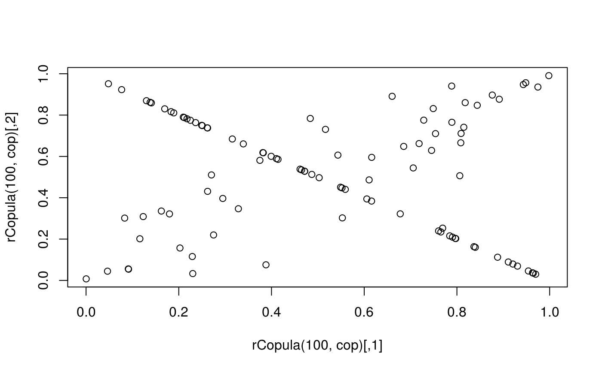
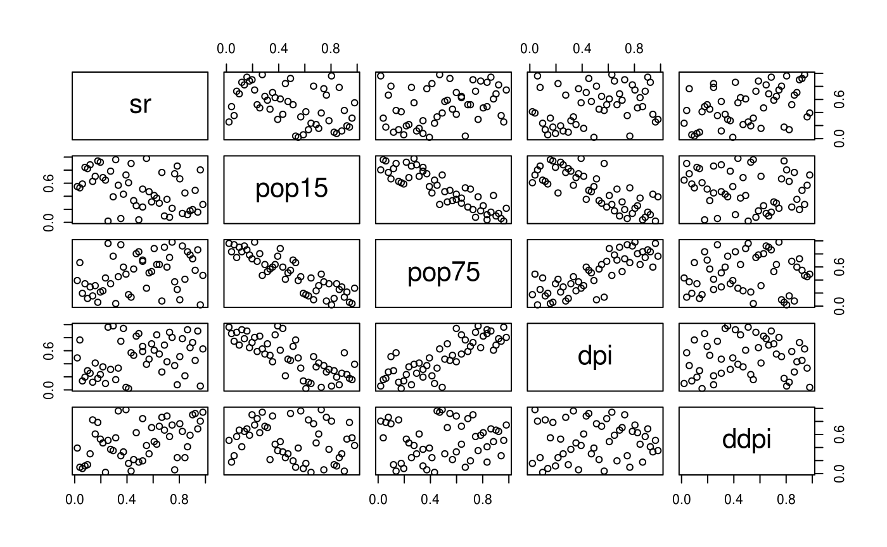

vignettes/convexcombcopula.Rmd
convexcombcopula.RmdThe goal of this vignette is to describe what are convex combinations of copulas and how we implemented them inside the empCop package. The actual implemntation only deals with linear combinations.
First, if we supose a list of copulas \(C_i, i \in {1,...,n}\) all of the same dimension, we should emphasis that \(\sum\limits_{i=1}^n \alpha_i C_i\) is still a copula as soon as \(\sum\limits_{i=1}^n \alpha_i = 1\) and \(\alpha_i >=0 \forall i\).
This simple linear combinaison of copulas can be constructed in R through the following code :
library(copula)
library(empCop)
copulas <- list(
archmCopula("gumbel",3,dim=2),
archmCopula("clayton",-1,dim=2)
)
(cop <- ConvexCombCopula(copulas))
#> This is a ConvexCombCopula , with :
#> dim = 2
#> number of copulas = 2
#> alpha = 0.5 0.5
#> sub-copulas can be accessed trhough the @copulas slot
plot(rCopula(100,cop))
The number of copulas is not restricte. Avaliables methods are for the moment rCopula and pCopula.
For exemple, given a dataset, we could optimise each copula first and them optimise weights, based on some criterion, e.g rmse.
data("LifeCycleSavings")
pseudo_data <- apply(LifeCycleSavings,2,rank)/(nrow(LifeCycleSavings)+1)
d <- ncol(pseudo_data)
pairs(pseudo_data)
For exemple, let’s start from checkerboards(m=10) with known bivariate clayton margins. Since only the variables 2 to 4 seems to be non-independant, we will calculate cbkmCopulas only for thoose.
cbkm_clayton <- function(data,margins,m=5){
known_copula <-
archmCopula("Clayton",dim=2,
param = coef(fitCopula(
archmCopula("Clayton",dim = length(margins)),
data[,margins],
method="itau")))
cbkmCopula(data,
m=m,
pseudo=TRUE,
margins_numbers = margins,
known_cop = known_copula,
quiet=TRUE
)
}
couples <- as.matrix(expand.grid(2:4,2:4))
couples <- couples[couples[,1]<couples[,2],]
copulas <- apply(couples,1,function(margins){
cbkm_clayton(pseudo_data,margins)
})
ccc_equal_weights <- ConvexCombCopula(copulas)
simu <- rCopula(500,ccc_equal_weights)
pairs(rbind(simu,pseudo_data),
col=c(rep("black",nrow(simu)),rep("red",nrow(pseudo_data))),
gap=0,
lower.panel=NULL)This combinasion was taken with equal weights. But we could also try to optimise them. For exmeple, we could compute a predictive performance measure like the RMSE on a leave-one-out context and use it as a criterion.
The “good” model will be the empirical copula. We calculate values of the empirical copula on the dataset when in a leave-ont-out way. Let’s choose only 46 points.
X <- pseudo_data[sample(1:nrow(pseudo_data),46),]
d = ncol(X)
n = nrow(X)
pEmpCop_loo <- sapply(1:n,function(i_loo){
sum(colSums(t(X[-i_loo,]) <= X[i_loo,]) == d)
}) / nNow, we also need to compute the different models in a leave-one-out manner :
pcopulas_loo <- sapply(1:n,function(i_loo){
copulas <- apply(couples,1,function(margins){
cbkm_clayton(X[-i_loo,],margins)
})
sapply(copulas,function(cop){
pCopula(X[i_loo,],cop)
})
})Now let’s calculate the RMSE per copulas :
rmse_loo <- sapply(1:nrow(pcopulas_loo),function(i){
sum((pcopulas_loo[i,] - pEmpCop_loo)^2)
})
weights <- (1/rmse_loo)/sum(1/rmse_loo)Using thoose weights, we can calculate a new convex combination of copulas :
ccc_loo <- ConvexCombCopula(copulas,alpha = weights)
simu <- rCopula(500,ccc_loo)
pairs(rbind(simu,X),
col=c(rep("black",nrow(simu)),rep("red",nrow(X))),
gap=0,
lower.panel=NULL)We could compare the kendall’s tau matrices :
cor(X,method="kendall")
#> sr pop15 pop75 dpi ddpi
#> sr 1.0000000 -0.2637681 0.19545255 0.14396135 0.27369452
#> pop15 -0.2637681 1.0000000 -0.71407913 -0.58260870 -0.11315286
#> pop75 0.1954526 -0.7140791 1.00000000 0.62312596 0.03292979
#> dpi 0.1439614 -0.5826087 0.62312596 1.00000000 0.01644101
#> ddpi 0.2736945 -0.1131529 0.03292979 0.01644101 1.00000000
cor(rCopula(1000,ccc_loo),method="kendall")
#> [,1] [,2] [,3] [,4] [,5]
#> [1,] 1.0000000 -0.16719920 0.19224024 0.14373173 0.22277077
#> [2,] -0.1671992 1.00000000 -0.50273473 -0.42240240 -0.05665265
#> [3,] 0.1922402 -0.50273473 1.00000000 0.42477277 0.05171171
#> [4,] 0.1437317 -0.42240240 0.42477277 1.00000000 -0.01684885
#> [5,] 0.2227708 -0.05665265 0.05171171 -0.01684885 1.00000000This implmeentation is not finished because the actual implementation of the pCopula function is clearly not good enough (not fast enough) to go further in the optimisation process.
The solution to speed things up is to pass coputations to C++ instead of R, Wich we will do soon.